Clustering for EDA · Lab 06
From a score to a cut: the Laplacian, the Fiedler vector, and the sweep that turns a score into a partition.
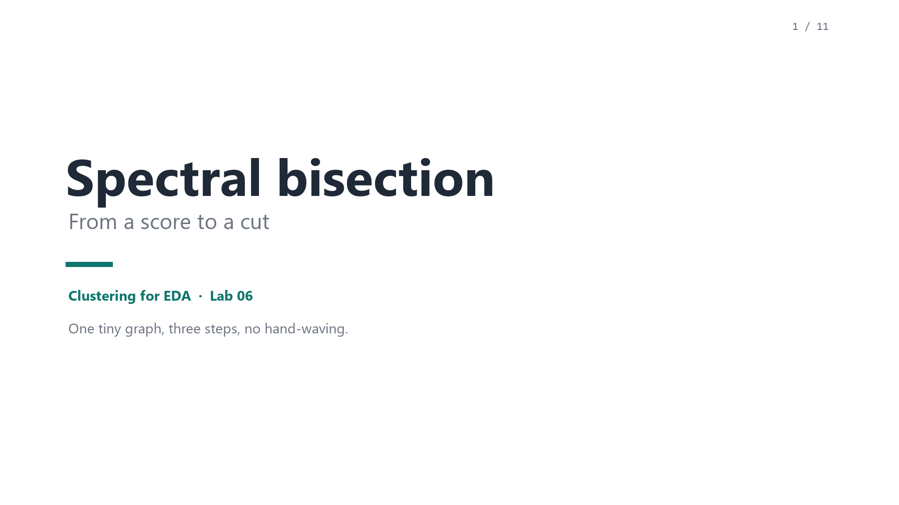
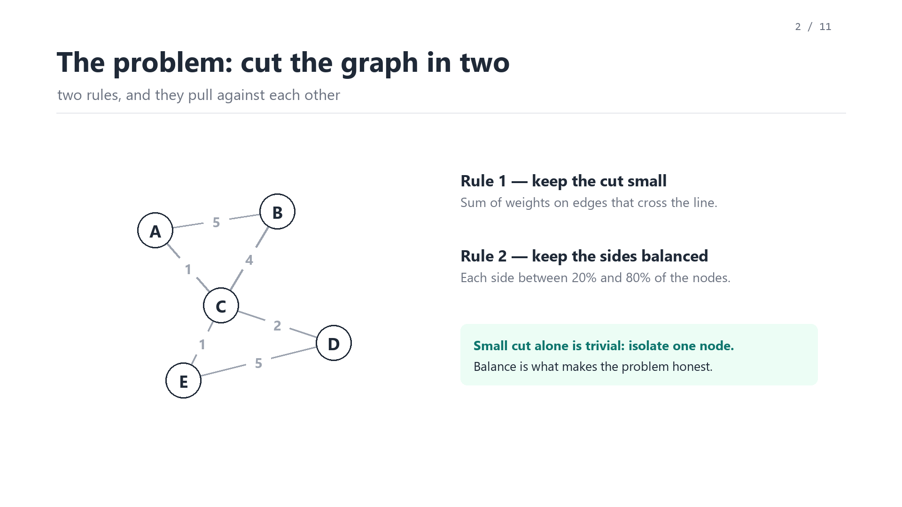
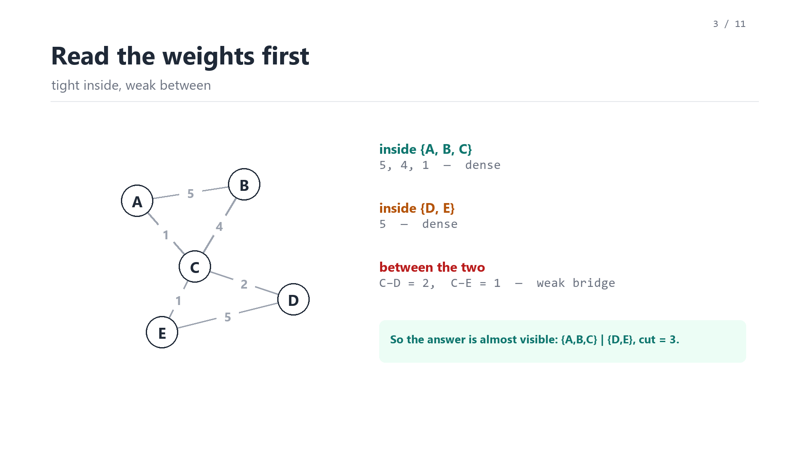
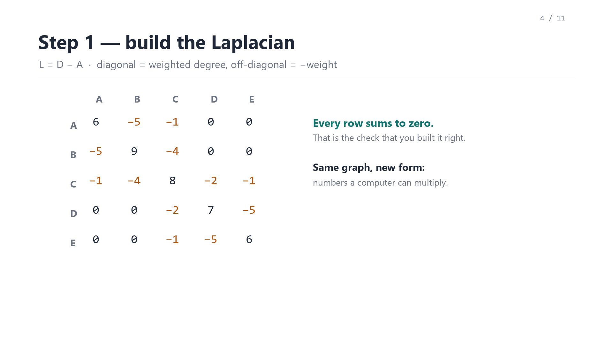
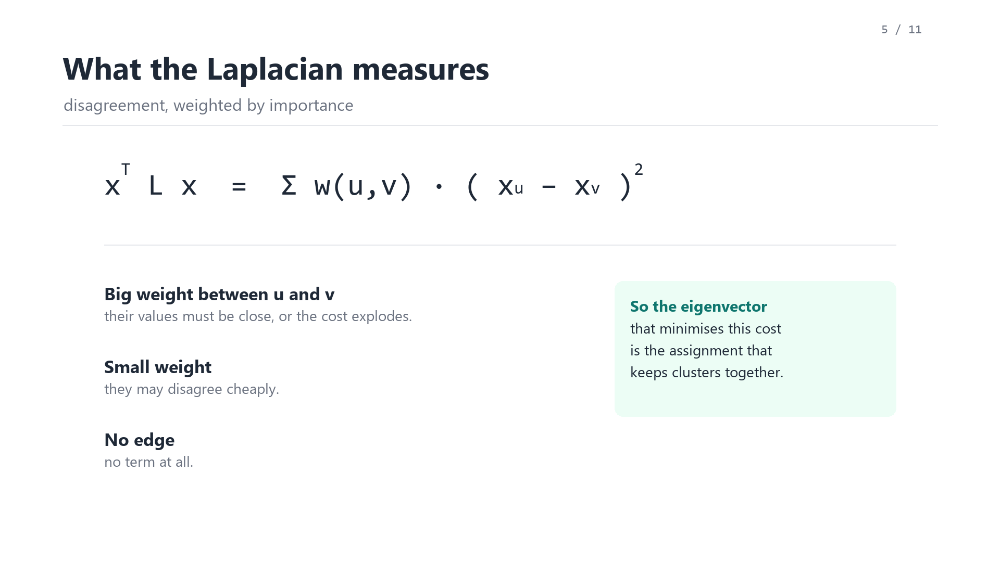
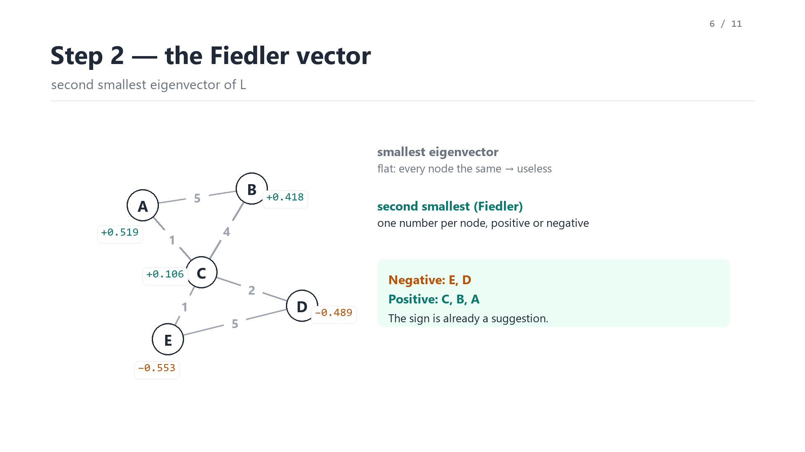
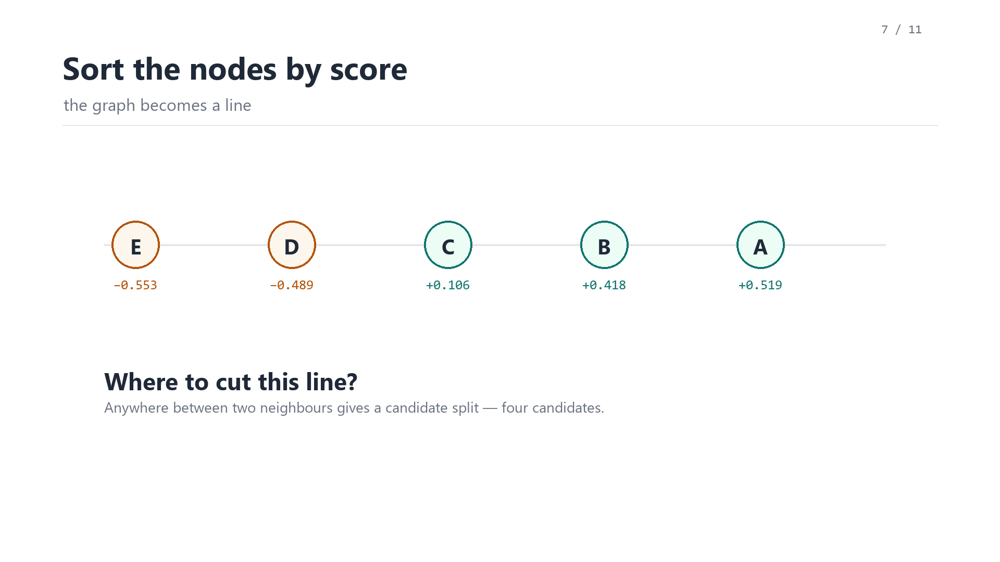
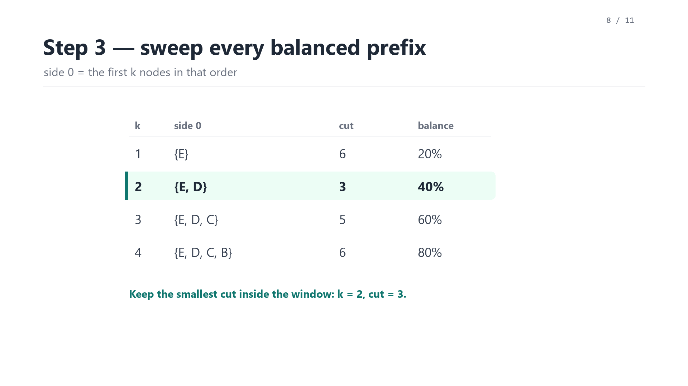
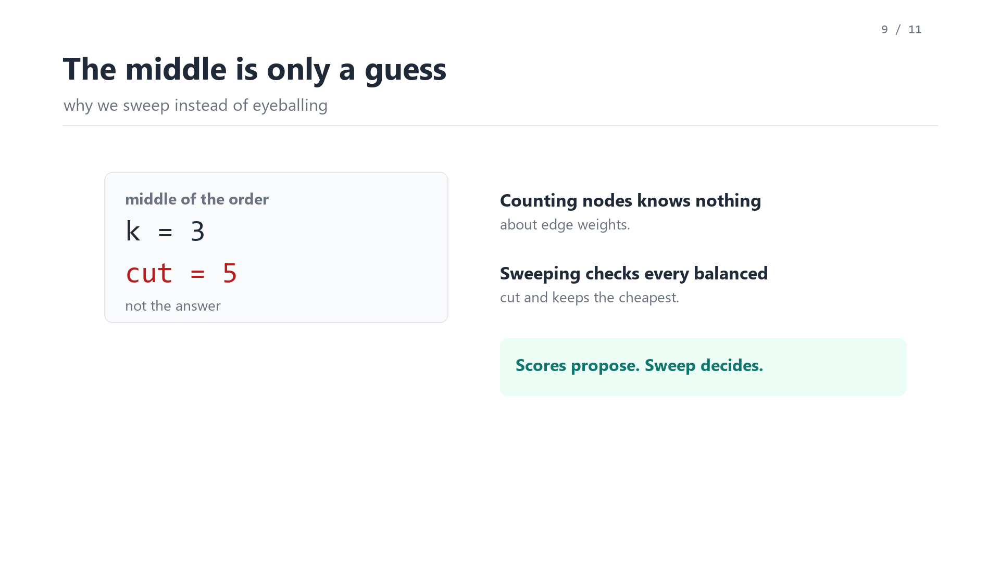
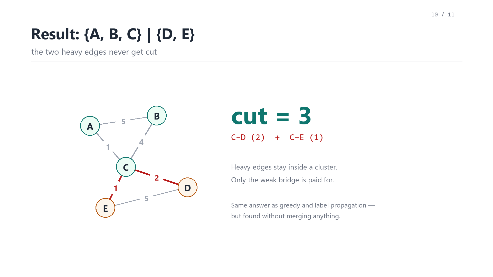
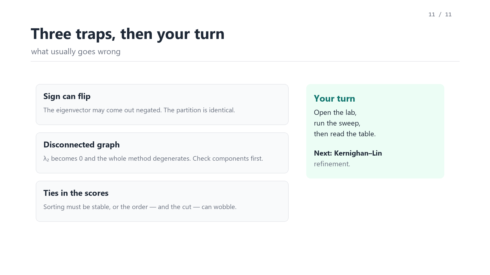
This page is a self-contained preview: the video, the slides and the subtitles are all local files,
no external fonts or CDNs. The same material is being prepared as a patch to
learn_clustering/module02-03-spectral-bisection; nothing in the course repo has been
replaced yet.